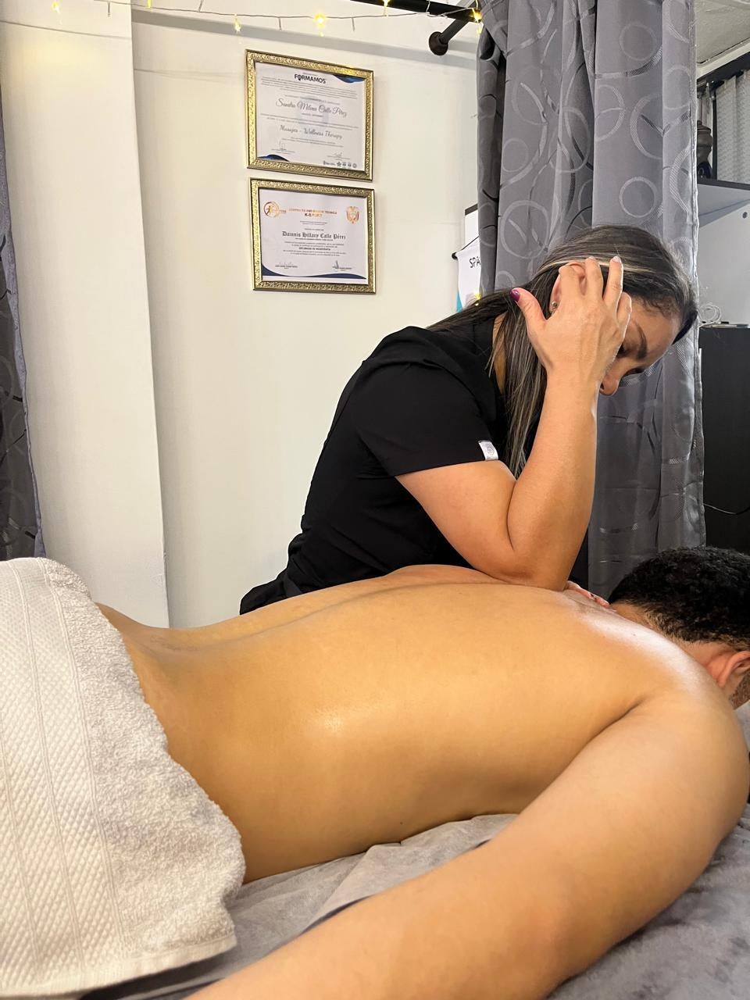
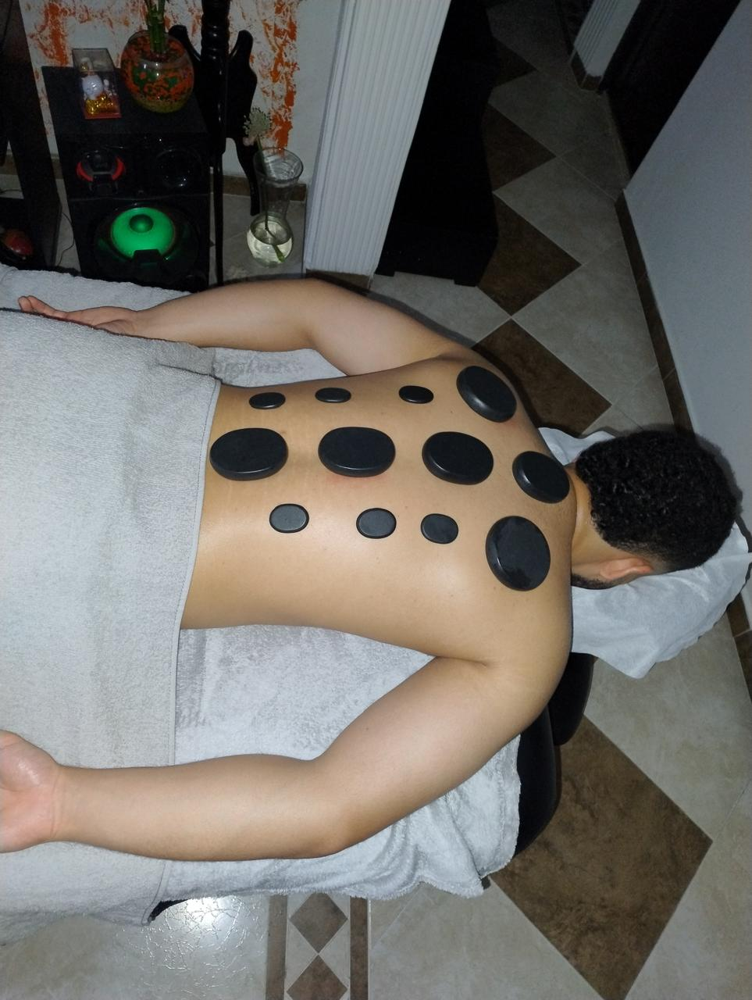
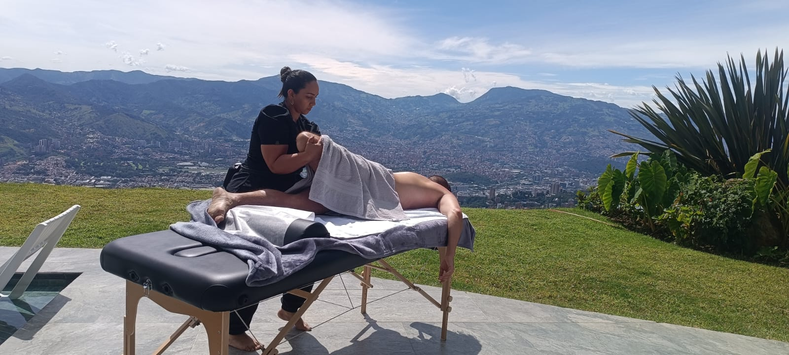
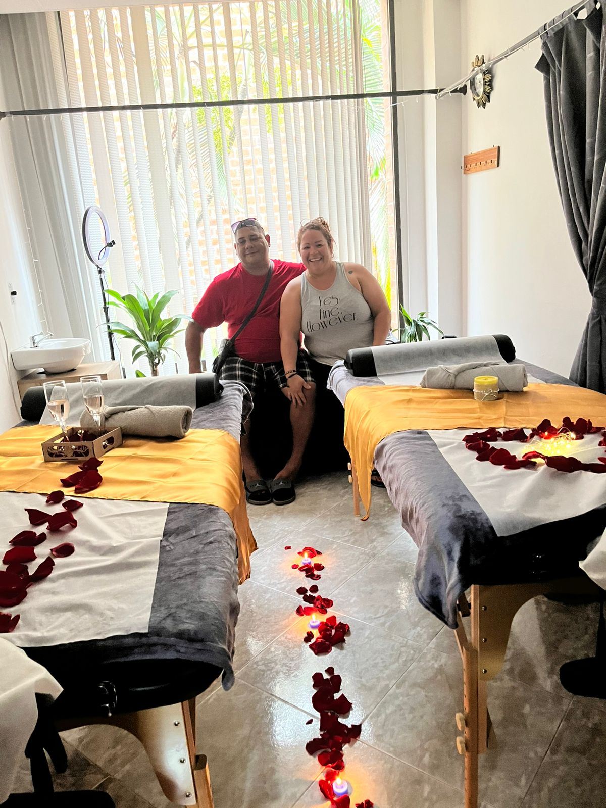
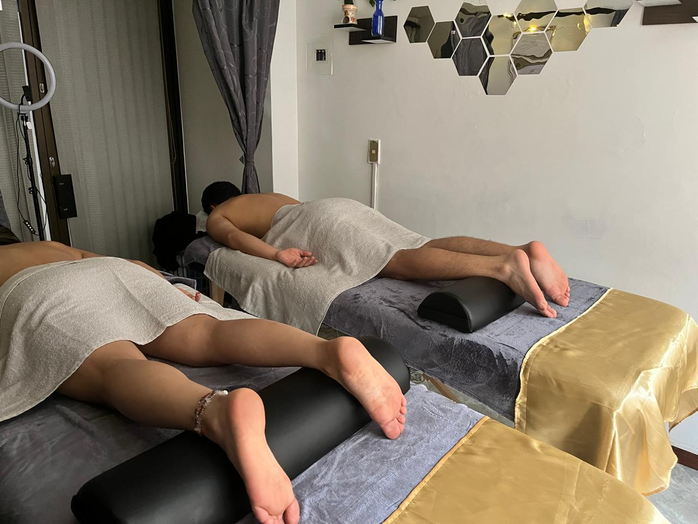
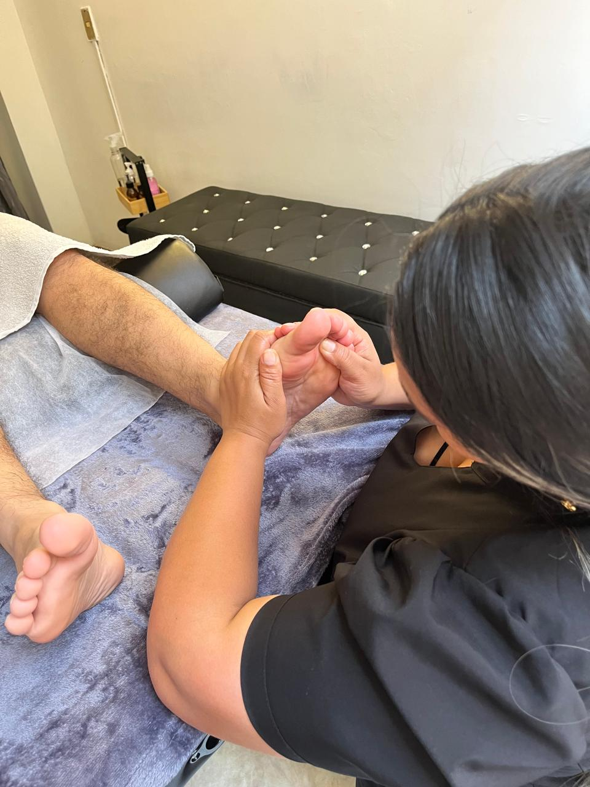

Avani Spa & Massage
Bienvenido a Avani Spa & Massage
Tu Oasis de Lujo para el Bienestar y la Relajación en Oaxaca
Ubicado en el Centro Histórico de Oaxaca, Quetzalcoatl #121, Col. Centro, nuestro spa es fácilmente accesible y está diseñado para ofrecerte una experiencia única de bienestar con todas las comodidades para que tu visita sea perfecta.
Estamos abiertos de lunes a sábado de 10:00 a.m. a 8:00 p.m.
Nuestros Servicios
Therapeutic Massage
A focused treatment designed to address specific muscle tension and pain points. Our therapeutic approach combines various techniques to promote healing, improve circulation, and restore balance to your body's natural alignment.
Deep Tissue Massage
Intensive therapy targeting deeper muscle layers and chronic tension points. Using firm pressure and slow strokes, this treatment helps release muscle knots, improve mobility, and alleviate persistent pain in neck, back, shoulders, and legs.
Sports Massage
Designed for active individuals and athletes. This treatment focuses on specific muscle groups to enhance performance, prevent injuries, and accelerate recovery. Includes stretching techniques and targeted pressure on overworked areas.
Relaxing Massage
A gentle, stress-relieving experience designed to calm the mind and deeply relax the body. Using smooth, flowing movements combined with aromatherapy and warm oils to improve circulation and create a sense of complete tranquility.
Couple's Massage
Share a romantic and relaxing experience together. Enjoy simultaneous massages in a tranquil setting designed for two, perfect for couples looking to reconnect and unwind together in a peaceful atmosphere.
Cupping Massage
Ancient healing technique using specialized cups to create suction on the skin. This treatment improves blood flow, reduces muscle tension, promotes healing, and helps release toxins from deep tissue layers.
Prenatal Massage
Gentle and safe massage specially designed for expecting mothers. Relieves lower back pain, leg swelling, shoulder tension, and improves circulation. Performed with comfortable positioning and techniques adapted to each pregnancy stage.
Postpartum Massage
Specialized treatment for new mothers to help the body recover after childbirth. Focuses on relieving muscle tension, improving circulation, reducing swelling, and providing emotional support during this important transition period.
Decontracting Massage
Therapeutic treatment specifically designed to release muscle contractures and chronic tension. Uses targeted pressure and specialized techniques to restore muscle flexibility and eliminate pain caused by prolonged stress or poor posture.
Hot Stone Massage
Luxurious treatment combining traditional massage with heated volcanic stones. The warm stones help penetrate deep into muscles, melting away tension and stress while promoting profound relaxation and improved circulation.
Special Decoration Massage
A uniquely personalized massage experience enhanced with special ambiance and decorative elements. Perfect for celebrations, special occasions, or when you want to create memorable moments in a beautifully customized setting.
Hot Candle Massage
Indulgent treatment using warm, melted candle wax that transforms into luxurious massage oil. The warm wax deeply nourishes the skin while providing a sensory experience that combines aromatherapy with deeply relaxing massage techniques.
Lomi Lomi Massage
Traditional Hawaiian massage technique using flowing, rhythmic movements that mimic ocean waves. This holistic treatment works on physical, mental, and spiritual levels, promoting deep relaxation and energy flow throughout the body.
4 Hands Massage
Experience the ultimate in luxury and relaxation with our signature 4 hands massage. Two skilled therapists work in perfect synchronization to provide a deeply immersive and therapeutic experience. The coordinated movements create a unique sensation that enhances relaxation and promotes faster muscle recovery. This premium treatment offers unparalleled stress relief and leaves you feeling completely rejuvenated.
Basic Facial Cleansing
Essential facial treatment including deep cleansing, gentle exfoliation for luminosity, light blackhead extraction, customized mask (calming, hydrating, or purifying), toning, moisturizing, and sun protection application. Perfect for maintaining healthy, glowing skin.
Deep Facial Cleansing
Comprehensive facial treatment featuring personalized skin analysis, facial yoga session, deep cleansing, activated charcoal exfoliation, enzymatic peeling mask, thorough impurity extraction, aloe vera calming mask, cryotherapy, lymphatic drainage, high-hydration mask, collagen veil, jade roller treatment, and sun protection.
Hydrofacial Treatment
Premium facial treatment designed to achieve porcelain-like skin perfection. Includes advanced cleansing techniques, specialized exfoliation, customized treatment masks, professional extractions, rejuvenating serums, facial massage for immediate glow effect, intensive hydration, and protective finishing. Ideal for special occasions or when you want flawless, radiant skin.
relaxation specialists






